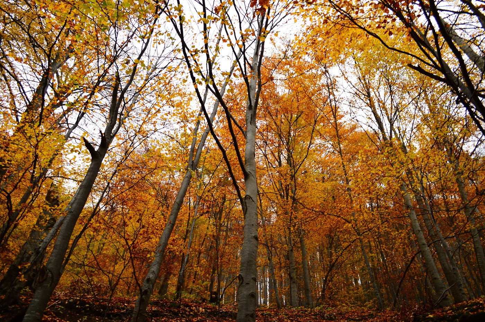
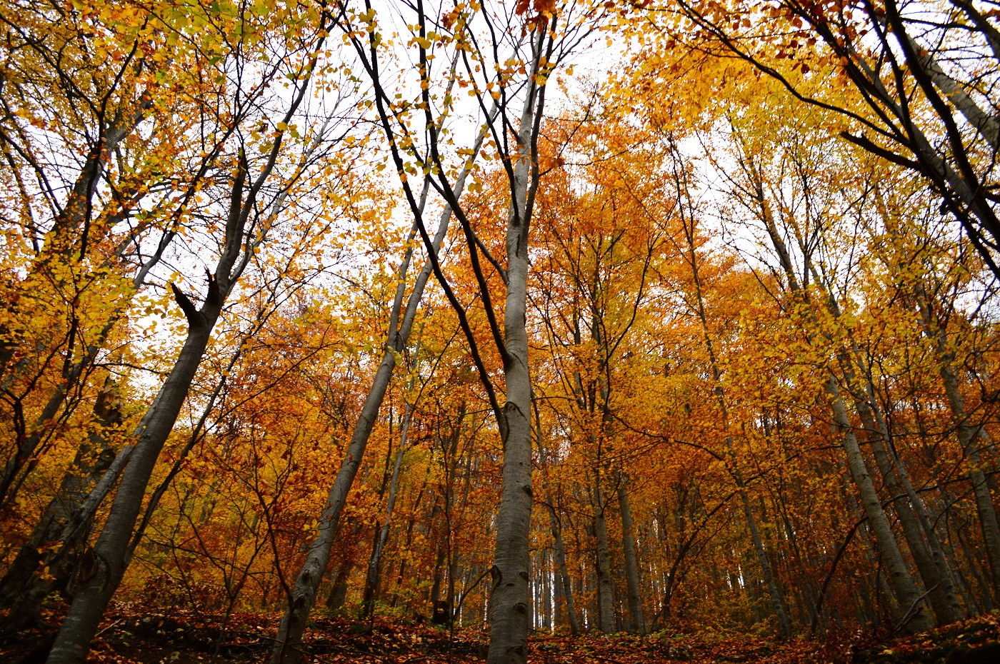
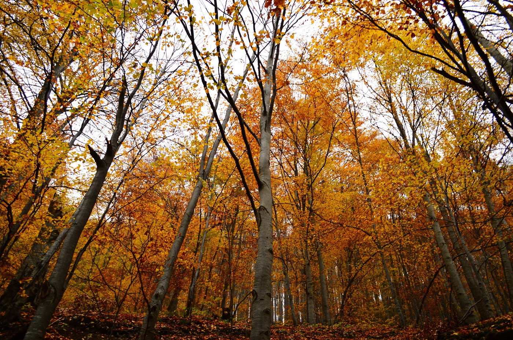

Padurile musonice se intalnesc in sudul Asiei, acolo unde bat musonii si unde, intr-un an, exista doar doua anotimpuri, unul ploios si altul secetos.Padurile musonice se deosebesc de cele ecuatoriale. In anotimpul secetos, cei mai multi dintre arbori isi pierd frunzele. De asemenea padurea musonica este mai putin deasa si este intrerupta de portiuni de savana. Arborii au trunchiuri masive, cu inele de crestere si scoarta aspra. Curios este ca, odata cu pierderea frunzelor, arborii infloresc. Ca si in padurea ecuatoriala, pe trunchiurile copacilor se catara liane, dar ele sunt mai putine si au lungimi mai mici.
Arborii care alcatuiesc padurile musonice sunt: abanosul (cu lemn negru), teckul (cu un lemn foarte tare, folosit la constructia navelor), santalul (cu lemn parfumat), palmierul.
Padurile musonice sunt populate de maimute (giboni, macaci), elefanti indieni, tigri, pantere, serpi, soparle, veverite zburatoare si diferite specii de pasari.
In zona temperata se intalnesc padurile de foioase si padurile de conifere.
